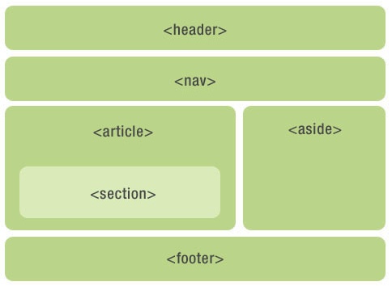
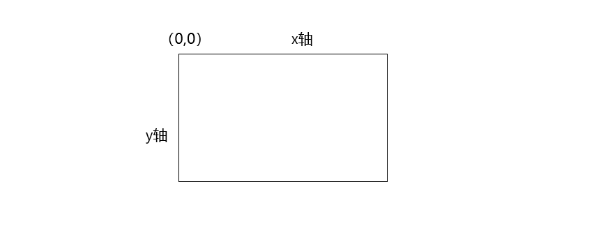

啥是HTML5？官方说HTML5 是下一代的 HTML...
本文主要介绍HTML5三个方面的知识，继续往下看看吧。
语义化标签的优点：
HTML5新增的语义化标签主要有：
<header>、<nav>、<footer>、<aside>、<section>、<article>等
接下来我们通过一张图来更深刻的记住这几个主要标签

<nav>:navigation，表示页面的导航，也可以在<header>中使用，还可以显示在侧边栏中，一个页面中可以有多个<nav>标签
<div>、<section>、<article>三者比较：
<div>：应用广泛，任意一个区域，非语义标签
<section>：包含的内容是一个明确的主题，通常有标题区域
<article>：应该使用在相对比较独立、完整的的内容区块，所以我们可以在一篇博客、一个论坛帖子、一篇新闻报道或者一个用户评论中使用<article>元素。article可以互相嵌套。
注意：
HTML5 <canvas> 标签用于绘制图像（通过脚本，通常是 JavaScript），拥有多种绘制路径、矩形、圆形、字符以及添加图像的方法。
首先我们要了解HTML5的坐标，如下图

1.创建canvas元素
向页面添加canvas元素，规定元素的id、width和height
<canvas id="myCanvas" width="200" height="100"></canvas>2.通过JavaScript来绘制
<script type="text/javascript">
var c=document.getElementById("myCanvas");//通过id来寻找canvas元素
var cxt=c.getContext("2d");//创建context对象
//绘制一个红色的矩形
cxt.fillStyle="#FF0000";//设置或返回用于填充绘画的颜色、渐变或模式
cxt.fillRect(0,0,150,75);//绘制被填充的矩形
</script>更多方法属性见https://www.w3school.com.cn/tags/html_ref_canvas.asp
Canvas 和 SVG 都允许您在浏览器中创建图形，但是它们在根本上是不同的。
1.SVG
SVG 是一种使用 XML 描述 2D 图形的语言。
SVG 基于 XML，这意味着 SVG DOM 中的每个元素都是可用的。您可以为某个元素附加 JavaScript 事件处理器。
在 SVG 中，每个被绘制的图形均被视为对象。如果 SVG 对象的属性发生变化，那么浏览器能够自动重现图形。
2.Canvas
Canvas 通过 JavaScript 来绘制 2D 图形。
Canvas 是逐像素进行渲染的。
在 canvas 中，一旦图形被绘制完成，它就不会继续得到浏览器的关注。如果其位置发生变化，那么整个场景也需要重新绘制，包括任何或许已被图形覆盖的对象。
3.两者之间的一些不同之处
Canvas
SVG
<meta name="viewport" content="width=device-width,initial-scale=1.0,maximum-scale=1.0,minimum-scale=1.0,user-scalable=no"><meta http-equiv="X-UA-Compatible" content="IE=edge,chrome=1"/>